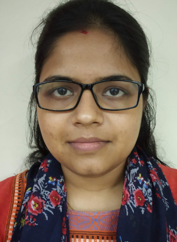

|  |
Devleena Ghosh
Research Scholar (PhD Student) Department of Computer Science and Engineering Indian Institute of Technology Kharagpur Address : Formal Methods Research Lab, Room No. 118, Ground Floor, CSE Building Department of Computer Science and Engineering, IIT Kharagpur, West Bengal 721 302, INDIA. Email: devleena.ghosh [at] iitkgp [dot] ac [dot] in ; devleena.ghosh07 [at] gmail [dot] com |
| Last updated: Aug 28, 2016. |